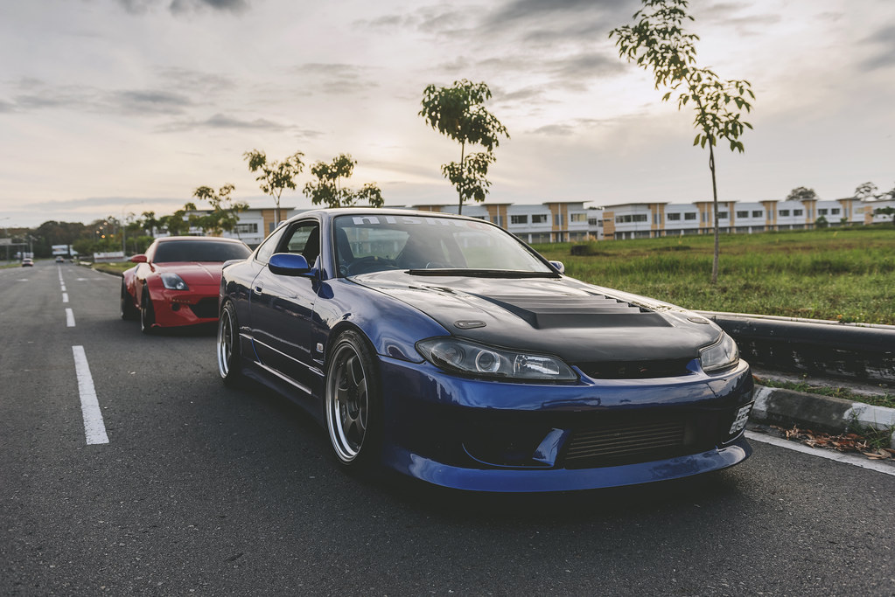

Nissan Silvia
Nissan Silvia, S13, S14 and S15 they were made between 1988 and 2002. They all came with a 2L turboed inline 4 it made about 200 horsepower. The S13 and S14 came with a 5 speed manual or automatic and the S15 came with either a 5 or 6 speed manual or a automatic. They all weighed about 1200KG